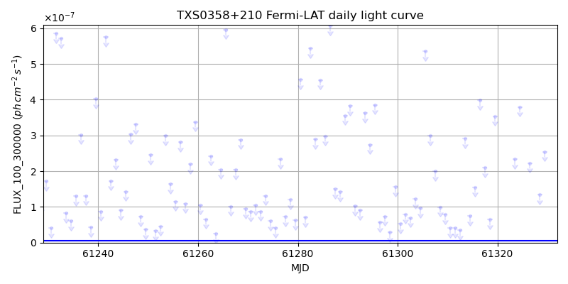
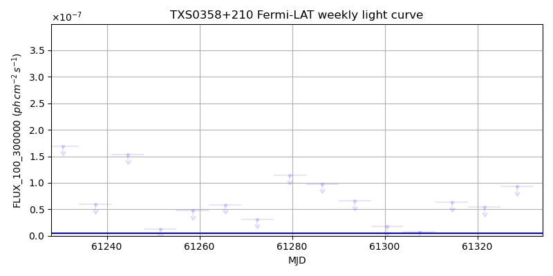
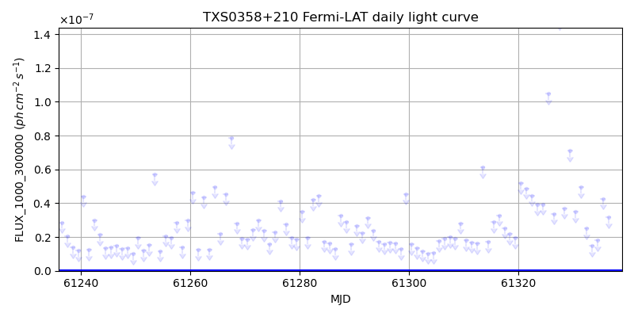
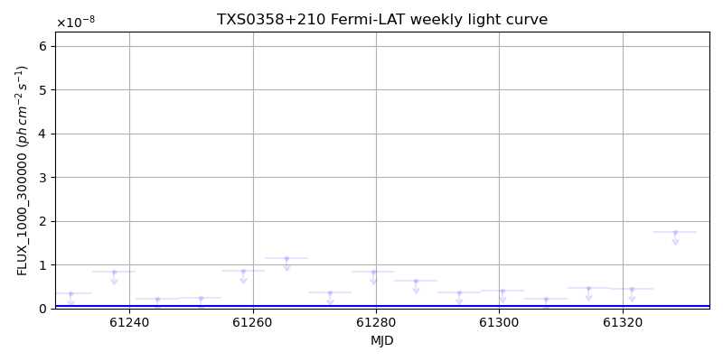

LAT Lightcurve site: https://fermi.gsfc.nasa.gov/ssc/data/access/lat/msl_lc/source/TXS_0358p210
NED: Query
Time of last update of this page: UT: 2026-10-17 15:14 (MJD: 61330.635)
| Property | Value |
|---|---|
| R.A. | 4:01:45.12 |
| Dec. | 21:10:30.0 |
| z | 0.834 |
| 3FGL SpectrumType | PowerLaw |
| 3FGL PL Index | 2.35 |
| 3FGL Flux_100_300000 | 1.12e-08 1 / (s cm2) |
| 3FGL Flux_1000_300000 | 4.97e-10 1 / (s cm2) |
| 3FGL Flux >200 GeV | 3.85e-13 1 / (s cm2) |
| 3FGL Extrap. Crab >200 GeV | 0.00 |
| 3FGL Flux After EBL Absorption >200GeV | 1.24e-14 1 / (s cm2) |
| 3FGL EBL Crab Fraction >200GeV | 0.00 |

| MJD | dMJD | Flux | dFlux | Frac3FGL | FracCrab>200GeV | EBLFracCrab>200GeV |
|---|---|---|---|---|---|---|
| 61325.50 | 0.50 | 1.02e-06 | 0.00e+00 | 0.00 | 0.00 | 0.00 |
| 61326.50 | 0.50 | 2.23e-07 | 0.00e+00 | 0.00 | 0.00 | 0.00 |
| 61327.50 | 0.50 | 6.40e-07 | 0.00e+00 | 0.00 | 0.00 | 0.00 |
| 61328.50 | 0.50 | 1.34e-07 | 0.00e+00 | 0.00 | 0.00 | 0.00 |
| 61329.50 | 0.50 | 2.54e-07 | 0.00e+00 | 0.00 | 0.00 | 0.00 |

| MJD | dMJD | Flux | dFlux | Frac3FGL | FracCrab>200GeV | EBLFracCrab>200GeV |
|---|---|---|---|---|---|---|
| 61293.50 | 3.50 | 6.57e-08 | 0.00e+00 | 0.00 | 0.00 | 0.00 |
| 61300.50 | 3.50 | 1.76e-08 | 0.00e+00 | 0.00 | 0.00 | 0.00 |
| 61307.50 | 3.50 | 6.89e-09 | 0.00e+00 | 0.00 | 0.00 | 0.00 |
| 61314.50 | 3.50 | 6.36e-08 | 0.00e+00 | 0.00 | 0.00 | 0.00 |
| 61321.50 | 3.50 | 5.41e-08 | 0.00e+00 | 0.00 | 0.00 | 0.00 |

| MJD | dMJD | Flux | dFlux | Frac3FGL | FracCrab>200GeV | EBLFracCrab>200GeV |
|---|---|---|---|---|---|---|
| 61325.50 | 0.50 | 1.05e-07 | 0.00e+00 | 0.00 | 0.00 | 0.00 |
| 61326.50 | 0.50 | 3.37e-08 | 0.00e+00 | 0.00 | 0.00 | 0.00 |
| 61327.50 | 0.50 | 1.49e-07 | 0.00e+00 | 0.00 | 0.00 | 0.00 |
| 61328.50 | 0.50 | 3.71e-08 | 0.00e+00 | 0.00 | 0.00 | 0.00 |
| 61329.50 | 0.50 | 7.12e-08 | 0.00e+00 | 0.00 | 0.00 | 0.00 |

| MJD | dMJD | Flux | dFlux | Frac3FGL | FracCrab>200GeV | EBLFracCrab>200GeV |
|---|---|---|---|---|---|---|
| 61293.50 | 3.50 | 3.73e-09 | 0.00e+00 | 0.00 | 0.00 | 0.00 |
| 61300.50 | 3.50 | 4.16e-09 | 0.00e+00 | 0.00 | 0.00 | 0.00 |
| 61307.50 | 3.50 | 2.25e-09 | 0.00e+00 | 0.00 | 0.00 | 0.00 |
| 61314.50 | 3.50 | 4.68e-09 | 0.00e+00 | 0.00 | 0.00 | 0.00 |
| 61321.50 | 3.50 | 4.39e-09 | 0.00e+00 | 0.00 | 0.00 | 0.00 |
--------------------------------------------------------- Using user-supplied coords: 4:01:45.12 21:10:30.0 2000 --------------------------------------------------------- FLWO UT night of: 2026-10-18 Local Sid. @ Midnight: 01:23 Sunset (-15.0) (local, UT): 18:56 01:56 Sunrise (-15.0) (local, UT): 05:22 12:22 Moonrise (local, UT): Moonset (local, UT): 22:59 05:59 Moon phase: 0.47 --------------------------------------------------------- AzTime LSID UT Obj_el Obj_az Mn_el Mn_az Sep. --------------------------------------------------------- 18:56 20:18 01:56 -9.2 57.9 30.5 195.3 135.0 19:26 20:48 02:26 -2.2 62.2 28.5 202.5 134.8 19:56 21:18 02:56 2.4 66.2 25.9 209.3 134.6 20:26 21:48 03:26 8.2 70.0 22.6 215.6 134.5 20:56 22:19 03:56 14.2 73.5 18.8 221.3 134.3 21:26 22:49 04:26 20.4 77.0 14.5 226.6 134.1 21:56 23:19 04:56 26.7 80.4 9.9 231.4 133.9 22:26 23:49 05:26 33.0 83.8 5.0 235.7 133.7 22:56 00:19 05:56 39.4 87.4 0.2 239.8 133.5 23:26 00:49 06:26 45.8 91.3 -5.5 243.5 133.3 23:56 01:19 06:56 52.1 95.7 -11.3 247.0 133.1 00:26 01:49 07:26 58.5 101.0 -17.0 250.4 132.8 00:56 02:19 07:56 64.7 107.9 -22.8 253.6 132.5 01:26 02:49 08:26 70.6 117.9 -28.7 256.7 132.3 01:56 03:19 08:56 75.8 134.4 -34.7 259.8 132.0 02:26 03:49 09:26 79.2 163.2 -40.7 263.0 131.7 02:56 04:20 09:56 78.9 200.7 -46.8 266.4 131.4 03:26 04:50 10:26 75.3 227.9 -52.8 270.1 131.0 03:56 05:20 10:56 69.9 243.4 -58.9 274.3 130.7 04:26 05:50 11:26 64.0 252.9 -64.9 279.6 130.4 04:56 06:20 11:56 57.8 259.6 -70.8 287.0 130.1 05:22 06:46 12:22 52.3 264.2 -75.7 297.1 129.8 --------------------------------------------------------- Dark hours >55 deg.: 5.00 srcstart (UT): 2026-10-18 07:09 srcend (UT): 2026-10-18 12:09